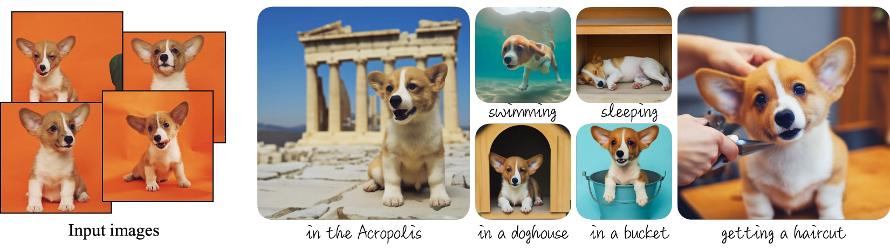

Image generation
DreamBooth
Teach a diffusion model to place your own subject in new scenes while preserving its identity.

What you’ll build
Personalize a text-to-image model from 5–10 photographs, then generate the subject in unseen settings and styles.
Model and adaptation
Stable Diffusion 1.5 with LoRA in U-Net attention; frozen VAE and text encoder. Optional prior preservation.
DreamBooth learns a subject from a small image collection. The course implements a lightweight SD 1.5 LoRA variant; SDXL and FLUX are separate extension targets requiring their own training setup.
Data
Training
5–10 photographs of one subject, with varied views and backgrounds; keep related photo sessions in the same split.
Evaluation
Held-out subject photos and a fixed prompt suite; compare the base model and adapter with identical seeds.
How to measure success
- DINO-I ↑
- Subject similarity to held-out reference photos.
- CLIP-I ↑
- Visual similarity to the reference subject.
- CLIP-T ↑
- Agreement between the generated image and its prompt.
What to submit
- A reusable LoRA adapter and its training configuration.
- A gallery of the same subject in several new scenes.
- A baseline-versus-adapter comparison with fixed prompts and seeds.
- An error analysis covering identity drift and overfitting.